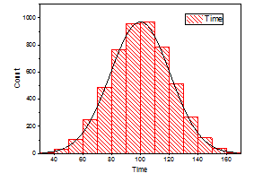

ヒストグラム+確率グラフ
Histogram-Graph
| ヒストグラム
|
分布
|
ラベル付きヒストグラム
|

|

|

|
必要なデータ
- ワークシート：1つまたはそれ以上の列（あるいは列内のある範囲）を選択します。
または、
- 行列：1つの行列シートを選択します。シート内に複数の行列オブジェクトがある場合、アクティブな行列オブジェクトが作図されます。
または、
- イメージ：1つのイメージウィンドウを選択します。イメージ内に複数のフレームがある場合は、全てのフレームが作図されます。すべてのフレームを表示する方法については、下記のNoteを参照してください。
グラフ作成
ヒストグラム
- データを選択
- メニューから .
- または、
- 2Dグラフギャラリーツールバーのヒストグラムボタンをクリックします。
分布曲線付きヒストグラム
- 必要なデータを選択します（ワークシート）。
- メニューから .
ラベル付きヒストグラム
- 必要なデータを選択します（ワークシート）。
- メニューから .
作成とカスタマイズについての詳細は ヒストグラム ページをご覧下さい。
テンプレート
ヒストグラム: HIST.OTP
分布: HISTDIST.OTP
ラベル付き: HistLabel.OTP
上記の3つのテンプレートはすべてOriginのプログラムフォルダにインストールされています。
Notes
- メニューコマンドは、選択した各データセットを同じレイヤーにプロットします。
- 分布曲線を重ね合わせたヒストグラムは、作図の詳細ダイアログのデータタブにある分布曲線：タイプドロップダウンリストから分布タイプを選択することによってヒストグラムグラフから作成できます。同様に、ラベル付きヒストグラムグラフは、ラベルタブでラベルを有効にすることによってヒストグラムグラフから作成できます。
- イメージ内に複数のフレームがある場合は、全てのフレームが作図されます。全てのフレームを表示するには、
- ページレベルのミニツールバーから、ブラウザグラフの列入れ替えボタン
 をクリックします。左側にナビゲーションパネルが開きます。
をクリックします。左側にナビゲーションパネルが開きます。
- 三角ボタンをクリックします。
- めくる: 指定したステップごとにフレームをめくって表示します。
- 自動再スケール - なし/Y軸のみ/全て: 軸を自動再スケールしない/Y軸を自動再スケール/XY軸両方を自動再スケール
- 再スケール - Y軸のみ: Y軸の手動再スケール